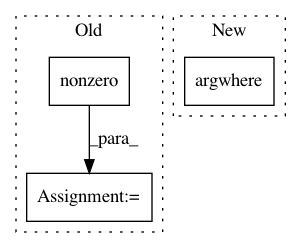

9a38f3d417fcc8fb7a1125e77088d8a907daab4b,beginner_source/profiler.py,MyModule,forward,#MyModule#Any#Any#,243
Before Change
with profiler.record_function("MASK INDICES"):
threshold = out.sum(axis=1).mean()
hi_idx = (mask > threshold).nonzero(as_tuple=True)
return out, hi_idx
After Change
with profiler.record_function("MASK INDICES"):
threshold = out.sum(axis=1).mean().item()
hi_idx = np.argwhere(mask.cpu().numpy() > threshold)
hi_idx = torch.from_numpy(hi_idx).cuda()
return out, hi_idx
In pattern: SUPERPATTERN
Frequency: 3
Non-data size: 3
Instances
Project Name: pytorch/tutorials
Commit Name: 9a38f3d417fcc8fb7a1125e77088d8a907daab4b
Time: 2021-01-29
Author: brianjo@fb.com
File Name: beginner_source/profiler.py
Class Name: MyModule
Method Name: forward
Project Name: librosa/librosa
Commit Name: 5797b341b65c0dbdc95208cd1ce962aa068bcc32
Time: 2013-03-23
Author: brm2132@columbia.edu
File Name: librosa/beat.py
Class Name:
Method Name: _beat_tracker
Project Name: pytorch/tutorials
Commit Name: 1f9c7c46c38726817d5ce8f9476e0f8e599ad152
Time: 2021-02-04
Author: 30845429+ilia-cher@users.noreply.github.com
File Name: beginner_source/profiler.py
Class Name: MyModule
Method Name: forward